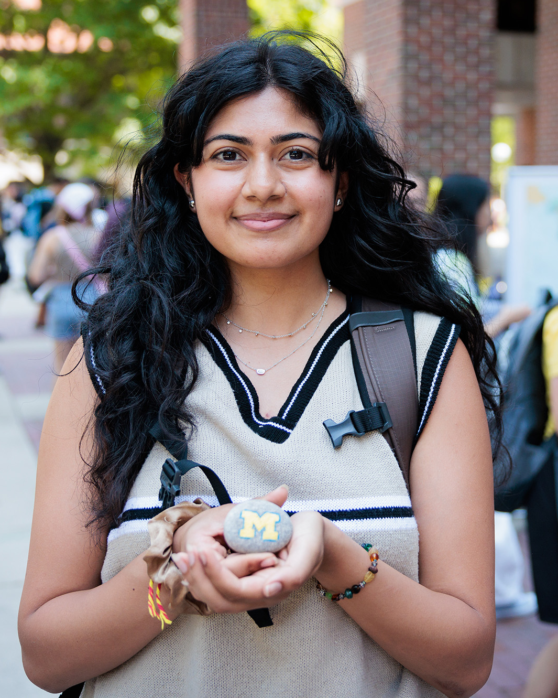

Empowering Your Potential
Supporting women and underserved communities at U-M with academic, financial, and professional resources.
Your Journey, Our Support
CEW+ is dedicated to empowering women and nontraditional students by providing essential resources to help overcome barriers in education and career advancement. Whether you're returning to school, balancing multiple responsibilities, or facing financial challenges, we are here to support you every step of the way. Our expert team offers scholarships, mentorship, and personal guidance to help you achieve your academic and professional aspirations.
Our Services
- Academic and Career Counseling Scholarships, grants, and fellowships:
One-on-one coaching to help with goal setting, resume building, interview preparation, and navigating work-life balance.
Personalized action plans for career transitions, returning to school, and addressing unique challenges faced by women and nontraditional students.
- Scholarships and Funding Opportunities:
Financial support through merit- and need-based scholarships, grants, and fellowships tailored to support students facing financial hardships.
Guidance on external funding opportunities and how to apply effectively.
- Workshops & Professional Development:
Skill-building events covering leadership, financial literacy, wellness, and career planning.
Opportunities to connect with peers, mentors, and professionals through networking events.
- Advocacy and Community Support:
Championing equity and inclusion through campus-wide initiatives, policy advocacy, and partnerships.
Programs designed to support diverse populations, including first-generation students, caregivers, and underrepresented groups.

Student Stories
See how these resources have positively impacted the lives of fellow students

Serine Paul,
2nd Year Grad
"CEW+ provided me with the resources and confidence I needed to return to school after a career break."

John Jacob,
PhD Student
"The career counseling services helped me transition from academia to a corporate career with ease."
See what more of our students say!
Get Involved
Make a difference by contributing to CEW+ through donations, mentorship, or volunteering. Your support helps us continue to provide critical services to students in need.
See how you can give back!